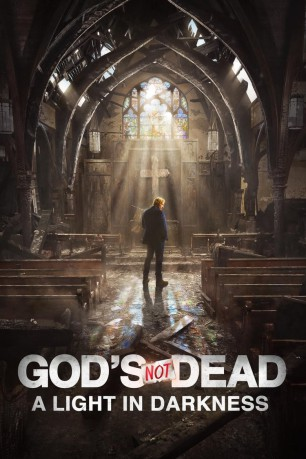
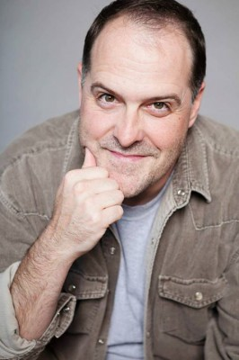
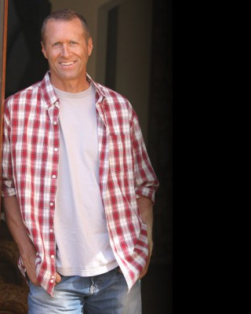

#10567 Gott ist nicht tot: Ein Licht in der Dunkelheit
Alternativ: God's Not Dead: A Light in Darkness (Englischer Titel)
 
 IMDB-Wertung: 4.3 / 10
IMDB-Wertung: 4.3 / 10  Metascore: 33
Metascore: 33 
Der Pfaffe Dave muss Schicksalsschläge ertragen: Kiche niedergebrannt, Kumpel Pastor mit drin und tot. Wiederaufbau verweigert. Aber Dave gibt nicht auf!
Jahr: 2018
Dauer: 105 Minuten
FSK: 12
Land: USA Studio: Pure Flix EntertainmentTonspuren: DTS - ,
Untertitel: Deutsch,
Auflösung: 1080p (1920x800) Größe: 6584 MB
Genre: Drama
Regisseur: Michael Mason
Drehbuch: Michael Mason, Howard Klausner
Soundtrack: Pancho Burgos-Goizueta
Darsteller:
- Megan Alexander als Megan Alexander
- Bill Birch als Progressive Host
- Samantha Boscarino als Keaton Young
- Jennifer Cipolla als Sydney
- Barry Clifton als Robert Andrews
 John Corbett als Pearce Hill
John Corbett als Pearce Hill- Dean Denton als Police Officer
- Rhonda Johnson Dents als Cecilia Mbaye
- Nikki Dixon als Judy
 Abigail Duhon als Hadleigh Student #2
Abigail Duhon als Hadleigh Student #2- Greg Fallon als Campus Security
- Jeff Hall als Bruce
- Ren Hanami als Judge Gloria Pascual
- Shane Harper als Josh Wheaton
- Jodi Harris als Dana Gibson
- Cissy Houston als Cissy Houston
- Caitlin Leahy als Conservative Host
- Anne Leighton als Angela
-  David Maldonado als Roger
- Mike C. Manning als Adam Richertson
- Star McCann als Mother
 Ted McGinley als Thomas Ellsworth
Ted McGinley als Thomas Ellsworth- Brian McGovern als Newscaster
- Segun Oduolowu als Segun Oduolowu
- Tatum O'Neal als Barbara Solomon
- Benjamin A. Onyango als Reverend Jude
- Duncan Phillips als Duncan Phillips
- Jeanine Pirro als Judge Jeanine Pirro
- Timi Prulhiere als National Conservative Pundit #1
- Samuel Rodriguez als Pastor Sam Rodriguez
- Jessica Sherman als National Conservative Pundit #2
- Shwayze als Teo
-  Mark Sivertsen als Construction Foreman
- Kay Smith als Jacqueline Jimenez
- Michael Tait als Michael Tait
- Jennifer Taylor als Meg Harvey
- Anna Waldrum als Harbor Kid #1
- Jude S. Walko als Homeless Father
- David A.R. White als Reverend Dave
 Gregory Alan Williams als Reverend Roland Dial
Gregory Alan Williams als Reverend Roland Dial- Robert Babcock als Police Officer (uncredited)
- Becky Bartlett als Church Goer / Protester (uncredited)
- Trinity L Beals als Lawyer / Clerk (uncredited)
- Mike Brabender als Construction Worker (uncredited)
- Buddy Campbell als Hank (uncredited)
- Nancy Carter als Woman on Bicycle / Homeless Woman (uncredited)
- Leslie Dianne als Television Reporter (uncredited)
- Roman Fischer als Hadleigh Student / Jogger / Church Goer (uncredited)
- Lance J. Gosnell als Protester (uncredited)
- Misty Jezierski als Attorney (uncredited)
Datei: X:\3-Trilogie(G-M)\Gott ist nicht tot\Gott ist nicht tot Ein Licht in der Dunkelheit (2018, FSK12, 1920x800).mkv seit 21.01.2019
Festplatte: HD Collection-2(A-Z)-3(A-M)
 Alle Filme aus Gruppe '3-Trilogie(G-M)\Gott ist nicht tot'
Alle Filme aus Gruppe '3-Trilogie(G-M)\Gott ist nicht tot'